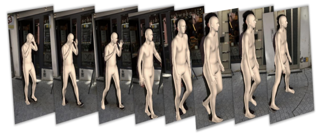

|
Research
I'm interested in computer vision, 3D vision, vision-language pre-training, papers are highlighted.
|
|
|
RECLIP: Resource-efficient CLIP by Training with Small Images
Runze Li*, Dahun Kim, Bir Bhanu, Weicheng Kuo
Transactions on Machine Learning Research (TMLR), 2023
We present RECLIP (Resource-efficient CLIP), a simple method that minimizes computational resource footprint for CLIP (Contrastive Language Image Pretraining).
Inspired by the notion of coarse-to-fine in computer vision, we leverage small images to learn from large-scale language supervision efficiently,
and finetune the model with high-resolution data in the end.
|
|
|
MonoIndoor++: Towards Better Practice of Self-Supervised Monocular Depth Estimation for Indoor Environments
Runze Li*, Pan Ji, Bir Bhanu,
Yi Xu
IEEE Transactions on Circuits and Systems for Video Technology (T-CSVT), 2022 (extensions from our ICCV 2021 paper.)
We propose (1) a depth factorization module to estimate a global depth scale factor, which helps the depth network
adapt to the rapid scale changes for indoor environments during model training, (2) a residual pose estimation module that mitigates the inaccurate
camera rotation prediction issue in the pose network and in turn improves monocular depth estimation performance, (3) incorporate coordinates
convolutional encoding to leverage coordinates cues in inducing relative camera poses.
|
|
|
Face Synthesis With a Focus on Facial Attributes Translation Using Attention Mechanisms
Runze Li*, Tomaso Fontanini,
Andrea Prati,
Bir Bhanu
IEEE Transactions on Biometrics, Behavior, and Identity Science (T-BIOM), 2022
We propose to (1) visually interpret conditional GANs for facial attribute translation by using a gradient-based attention mechanism.
and (2) new learning objectives for knowledge distillation using attention in generative adversarial training,
which result in improved synthesized face results, reduced visual confusions and boosted training for GANs in a positive way.
|
|

|
Learning Local Recurrent Models for Human Mesh Recovery
Runze Li*, Srikrishna Karanam, Terrence Chen,
Bir Bhanu, Ziyan Wu,
International Conference on 3D Vision (3DV), 2021
We present (1) a new method for video mesh recovery that divides the human mesh into several local parts following the standard skeletal model,
(2) model the dynamics of each local part with separate recurrent models, with each model conditioned appropriately based on the known kinematic structure
of the human body and this results in a structure-informed local recurrent learning architecture that can be trained in an end-to-end fashion with available annotations. W
|
|
|
Monoindoor: Towards good practice of self-supervised monocular depth estimation for indoor environments
Pan Ji*, Runze Li*,
Bir Bhanu,
Yi Xu(* equal contributions)
IEEE/CVF International Conference on Computer Vision (ICCV), 2021
We propose the MonoIndoor, which consists of two novel modules: a depth factorization module and a residual pose estimation module. In the depth factorization
module, we factorize the depth map into a global depth scale and a relative depth map. The depth scale factor is separately predicted by an extra branch
in the depth network. In the residual pose estimation module, we mitigate the issue of inaccurate rotation prediction by performing residual pose estimation in addition to an initial large
pose prediction.
|
|
|
Towards Visually Explaining Variational Autoencoders
Wenqian Liu*, Runze Li*, Meng Zheng, Srikrishna Karanam, Ziyan Wu, Bir Bhanu, Richard J. Radke, Octavia Camps. (* equal contributions)
IEEE/CVF Computer Vision and Pattern Recognition Conference (CVPR), 2020, Oral
We propose the first technique to visually explain VAEs by means of gradient-based attention. We present methods to generate visual attention from the
learned latent space, and also demonstrate such attention explanations serve more than just explaining VAE predictions. We show how these attention
maps can be used to localize anomalies in images, and how they can be infused into model training, helping bootstrap the VAE into learning improved
latent space disentanglement.
|
|
|
Energy-Motion Features Aggregation Network for Players’ Fine-grained Action Analysis in Soccer Videos
Runze Li, Bir Bhanu
IEEE Transactions on Circuits and Systems for Video Technology (T-CSVT), 2023
We (1) collect a dataset of highlight videos of soccer players, including two coarse-grained action types of soccer players and six fine-grained actions of players,
and provide annotations for the collected dataset, (2) propose an energy-motion features aggregation network-EMA-Net to fully exploit energy-based
representation of soccer players movements in video sequences and explicit motion dynamics of soccer players in videos for soccer players’ fine-grained action analysis.
|
|
|
Fine-grained Visual Dribbling Style Analysis for Soccer Videos with Augmented Dribble Energy Image
Runze Li, Bir Bhanu
CVPR Sports Workshop, 2019
We target on these highlight actions and movements in soccer games and focus on dribbling skills performed by the top players. We leverage
understanding of complex dribbling video clips by representing a video sequence with a single Dribble Energy Image(DEI) that is informative
for dribbling styles recognition.
|
|
{kind=link}